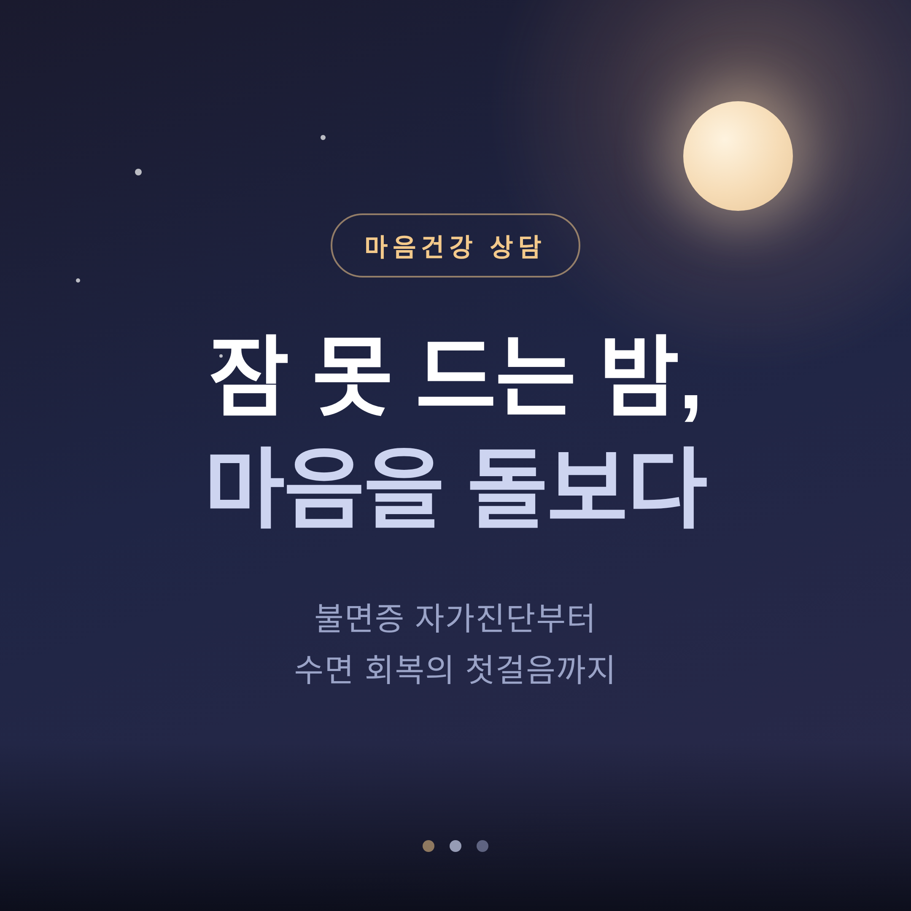
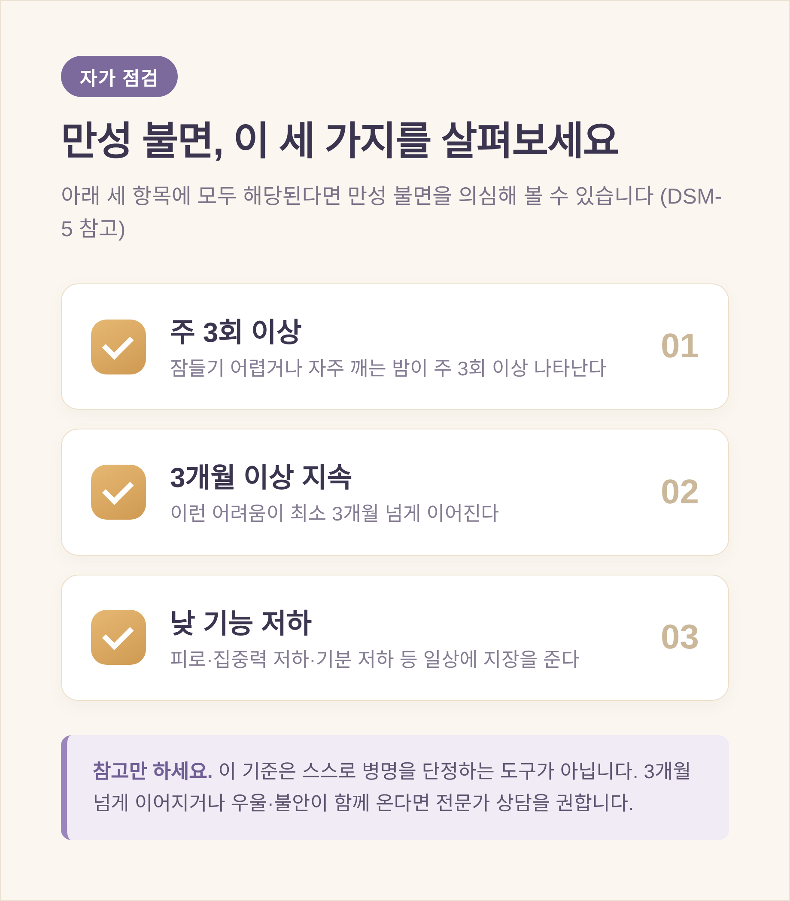
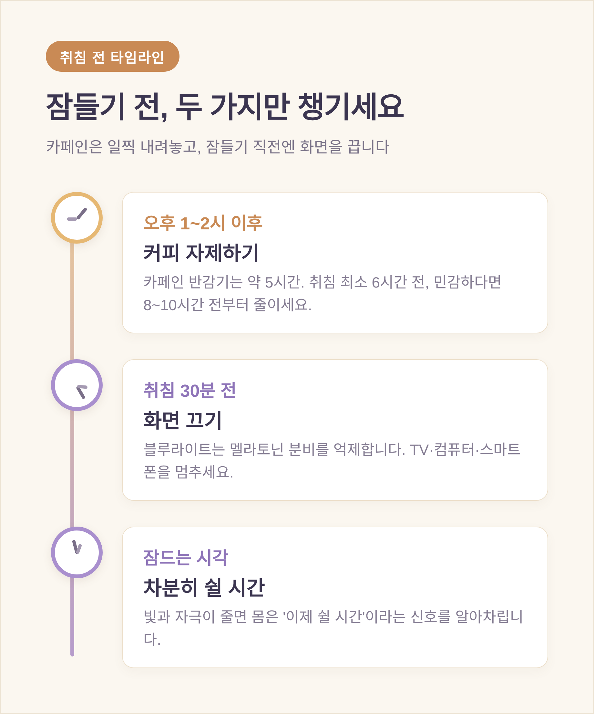
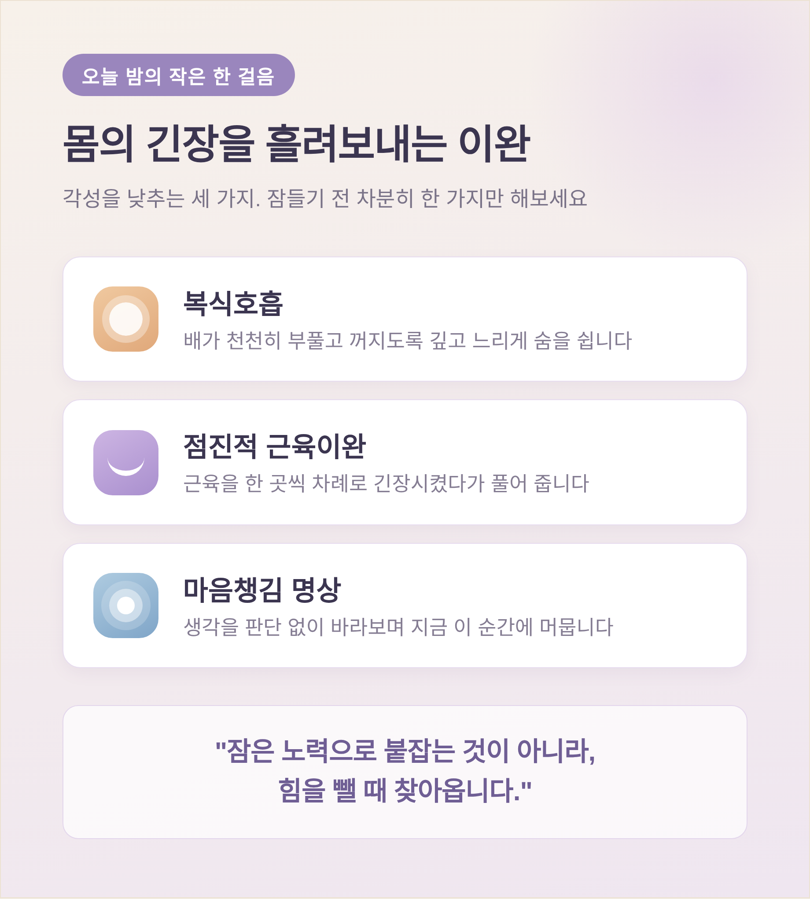

이번 글에서는 불면과 마음건강, 그리고 수면 회복의 첫걸음을 정리해 보겠습니다.
먼저 세 줄로 요약하겠습니다.
한 가지 먼저 말씀드립니다. 이 글은 일반적인 정보 안내이며, 전문 상담이나 진료를 대체하지 않습니다. 증상이 오래가거나 일상에 큰 지장을 준다면 정신건강의학과 전문의나 수면 전문 의료진의 도움을 받으시길 권합니다.
불면은 크게 세 가지 모습으로 나타납니다. 잠들기 어려운 입면 곤란, 자주 깨거나 다시 잠들기 어려운 수면 유지 곤란, 너무 일찍 깨어 다시 잠들지 못하는 조기 각성입니다.
며칠에서 몇 주의 일시적 불면은 흔하고, 정상 범위일 수 있습니다. 문제는 이것이 길게 이어질 때입니다.
DSM-5 진단 기준은 만성 불면장애를 이렇게 봅니다. 위 증상이 주 3회 이상, 최소 3개월 이상 지속되고, 충분히 잘 수 있는 기회가 있었는데도 나타나며, 낮 동안 피로·집중력 저하·기분 저하 같은 의미 있는 고통이나 기능 저하를 일으킬 때입니다.
여기서 '3개월'은 스스로 회복되는 일시적 수면 곤란과, 적극적 개입이 필요한 만성 불면증을 가르는 선입니다.
다만 이 기준은 참고용일 뿐, 스스로 병명을 단정하기 위한 도구가 아닙니다. 증상이 3개월 넘게 이어지거나 우울·불안이 함께 온다면, 혼자 가늠하기보다 전문가 상담을 받아보시길 권합니다.

불면과 마음건강은 서로 단단히 얽혀 있습니다.
우울증을 겪는 분의 60~90%가 수면장애를 호소하고, 만성 불면증을 겪는 분의 25% 이상에서 우울증이 나타납니다. 전체 불면증의 약 60~70%는 정서적 영역의 공존 증상을 동반합니다.
불안도 마찬가지입니다. 걱정과 불안은 몸의 각성을 높여 잠을 방해하고, 수면 문제가 심해지면 다시 불안이 깊어집니다. 불면증이 있는 분은 일반적인 경우보다 범불안장애를 겪을 확률이 약 2배 높다고 알려져 있습니다.
그래서 닭과 달걀 같습니다. 잠을 못 자서 마음이 힘든 건지, 마음이 힘들어 잠을 못 자는 건지 가려내기 어렵습니다.
중요한 것은 둘 중 하나만 보지 않는 것입니다. 수면만 붙들거나 기분만 다스리려 하기보다, 둘을 함께 돌볼 때 악순환의 고리가 느슨해집니다.
상담에서 자주 만나는 장면이 있습니다. 잠을 자야 한다는 생각이 간절할수록, 오히려 더 말똥말똥해지는 경우입니다.
수면 연구는 이것을 '수면 노력(sleep effort)'이라 부릅니다. 잠을 통제하려는 인지적·행동적 시도가 도리어 각성을 높여 불면을 지속시킨다는 것입니다.
침대에 누워 "왜 잠이 안 오지"라고 곱씹는 순간, 몸은 긴장하고 잠은 더 멀어집니다. 앞서 말한 불안과 불면의 악순환이 바로 여기서 작동합니다.
흥미롭게도, 잠을 자려는 노력 자체가 불안과 우울 사이를 양방향으로 매개한다는 연구도 있습니다. 즉 애쓰는 행위 그 자체가 돌봄의 대상이 될 수 있다는 뜻입니다.
그래서 저는 이렇게 권합니다.
"잠은 노력으로 붙잡는 것이 아니라, 힘을 뺄 때 찾아온다."
물론 이것을 단순한 위로로만 두면 공허합니다. 이 통찰은 잠이 오지 않을 때 침대에서 일단 나오는 자극조절, 그리고 몸의 긴장을 푸는 이완 같은 구체적 행동으로 이어질 때 비로소 힘을 갖습니다.
가장 손에 잡히는 두 가지는 카페인과 빛 관리입니다.
먼저 카페인입니다. 건강한 성인에서 카페인 반감기는 보통 약 5시간(자료에 따라 4~6시간) 정도이며, 개인차가 큽니다. 카페인은 잠드는 시각을 늦추고 총 수면시간을 줄일 뿐 아니라, 깊은 잠의 비중을 줄여 자고 일어나도 개운하지 않게 만듭니다.
끊는 시점은 자료마다 조금 다릅니다. 통상 '취침 6시간 전'이면 충분하다는 지침이 있고, 반감기와 개인차를 고려해 '취침 8~10시간 전'을 권하는 보수적 견해도 있습니다. 정리하면 이렇습니다. 최소 6시간 전, 카페인에 민감하다면 8~10시간 전부터 줄여 보시길 권합니다.
카페인을 천천히 분해하는 분, 또는 경구 피임약을 복용하는 여성은 반감기가 더 길어질 수 있으니 더 일찍 끊는 편이 안전합니다.
다음은 빛입니다.
| 구분 | 수면에 미치는 영향 |
|---|---|
| 카페인 | 입면 지연·총 수면시간 감소·깊은 잠 비중 감소(효과는 일시적) |
| 블루라이트 | 멜라토닌 분비 억제, 일주기 리듬 교란(영향이 며칠간 지속될 수 있음) |
스마트폰과 화면이 내뿜는 블루라이트는 멜라토닌 분비를 억제해 잠드는 시각을 늦추고 수면의 질을 떨어뜨립니다. 한 인용에 따르면 블루라이트가 멜라토닌을 최대 50%까지 줄일 수 있다고 하는데, 이는 특정 조건의 수치이므로 "줄일 수 있다" 정도로 받아들이는 편이 정확합니다.
저녁 화면 사용은 단 2시간만으로도 잠드는 시각을 늦추고 수면의 질을 떨어뜨릴 수 있습니다. 그래서 취침 최소 30분 전부터 TV·컴퓨터·스마트폰처럼 빛을 내는 기기를 멈추시길 권합니다.
예전엔 잠이 안 오면 습관처럼 휴대폰을 켰습니다. 지금은 그 시간을 화면을 끄는 신호로 바꿔 봅니다.

빛은 우리 몸의 일주기 시계를 환경에 맞추는 가장 강력한 신호입니다. 눈으로 받는 빛 노출이 24시간 주기의 수면-각성 리듬을 조율합니다.
송과체에서 나오는 멜라토닌은 '생물학적 밤' 동안 분비되어 몸에 어둠 신호를 보내고, 잠을 시작하고 유지하도록 돕습니다. 아침 빛은 리듬을 앞당겨 일찍 자고 일찍 깨기 쉽게 만들고, 늦은 밤의 빛은 리듬을 뒤로 밀어냅니다.
그래서 의외로 중요한 것이 잠드는 시각보다 일어나는 시각입니다. 주말에도 같은 시각에 일어나 아침 햇빛을 쬐는 일이 리듬을 안정시키는 토대가 됩니다.
다만 솔직히 인정하겠습니다. 이 습관은 하루아침에 완성되지 않습니다. 며칠 흔들려도 괜찮습니다. 다시 제자리로 돌아오면 됩니다.
만성 불면증의 1차 치료는 약물이 아닙니다.
미국내과학회와 DSM-5 가이드라인 기준으로, 성인의 만성 불면증에는 약물보다 불면증 인지행동치료(CBT-I)를 먼저 시도하도록 권합니다. CBT-I의 주요 구성은 다음과 같습니다.
메타분석에서 CBT-I는 수면 효율과 수면의 질을 모두 개선했고, 불면증지수와 수면 질 지수 점수를 낮췄습니다. 다만 수면제한이나 이완훈련을 단독으로 쓰기보다 통합 프로그램으로 진행하는 편이 권장됩니다. 그리고 CBT-I는 전문가의 안내 아래 진행할 때 더 효과적입니다.
오늘 밤 혼자 시도해 볼 수 있는 작은 한 걸음은 이완입니다. 복식호흡, 점진적 근육이완, 마음챙김 명상은 몸과 마음의 각성을 낮춰 줍니다. 점진적 근육이완은 몸의 근육을 한 곳씩 차례로 긴장시켰다가 풀어 주며 긴장을 흘려보내는 방법입니다.
잠들기 전 마지막 1시간을 화면 없이 차분하게 보내면, 몸은 '이제 쉴 시간'이라는 신호를 알아차립니다.

끝으로 한 마디만 더 드리겠습니다.
수면 회복은 완벽한 하룻밤을 만드는 일이 아니라, 회복으로 향하는 작은 첫걸음을 떼는 일입니다. 오늘은 커피를 조금 일찍 내려놓고, 잠들기 전 화면을 끄고, 내일 같은 시각에 일어나는 것 — 그 하나면 충분합니다.
그리고 혼자 버겁다면, 도움을 청하는 것도 회복의 일부입니다. 증상이 오래 이어지거나 마음까지 무겁다면, 전문가의 문을 두드려 보시길 권합니다.
잠이 다시 찾아오겠냐고 물으신다면, 천천히 그렇다고 답하겠습니다.